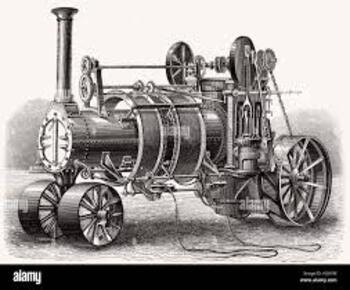
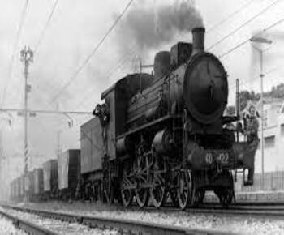
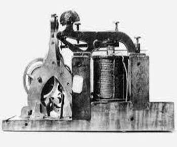

| |
LE MIGLIORI INVENZIONI CREATE DURANTE LA RIVOLUZIONE INDUSTRIALE
CHE COS'E UN INVENZIONE ?
Un'invenzione è la creazione di qualcosa di nuovo o l'introduzione di un concetto innovativo che porta a un avanzamento o a un miglioramento rispetto a ciò che esisteva precedentemente.
LE MIGLIORI INVENZIONI CREATE :
Durante la Rivoluzione Industriale, avvenuta principalmente tra la fine del XVIII e l'inizio del XIX secolo, sono state introdotte numerose invenzioni che hanno trasformato radicalmente la produzione e la società. Alcune delle più significative includono:
Macchina a vapore: Rivoluzionò l'industria e il trasporto, aumentando l'efficienza e consentendo lo sviluppo di locomotive e impianti industriali.
Tessitura meccanica: Introdotte dalle macchine tessili, migliorarono notevolmente la produzione tessile e ridussero la dipendenza dal lavoro manuale.
Ferrovia: Ha rivoluzionato i trasporti, consentendo il movimento efficiente di merci e persone su lunghe distanze.
Telare automatico: Semplificò il processo di tessitura, aumentando la produttività e riducendo i costi.
Lavorazione del ferro: La produzione in serie di ghisa e acciaio portò a una crescita significativa nell'industria metallurgica.
Filatoio automatico: Automatizzò il processo di filatura del cotone, migliorando la produttività e abbassando i costi.
Invenzioni nel settore agricolo: Come la mietitrebbia, che trasformò i metodi di raccolta dei raccolti.
Telegrafo:** Rivoluzionò le comunicazioni consentendo la trasmissione veloce delle informazioni a lunghe distanze.
Motore a combustione interna: Ha aperto la strada ai veicoli a motore e alle macchine industriali alimentate a benzina.
Illuminazione elettrica: L'invenzione delle lampadine contribuì a migliorare l'illuminazione nelle abitazioni e nei luoghi di lavoro.
Queste invenzioni hanno avuto un impatto duraturo sulla società e sull'economia, contribuendo a definire l'era industriale.
 Macchina a vapore Rivoluzione Industriale  Ferrovia con treno a vapore Rivoluzione Industriale.  Telegrafo Rivoluzione Industriale |
 |